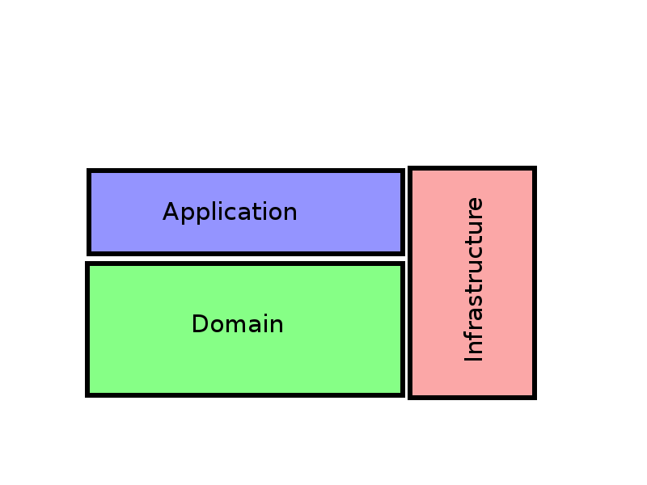
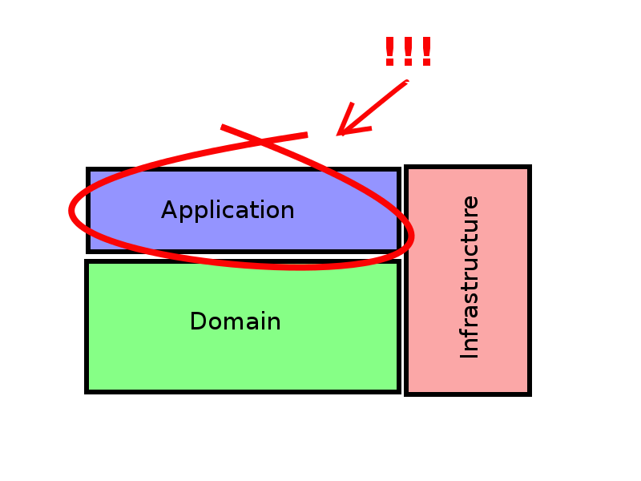
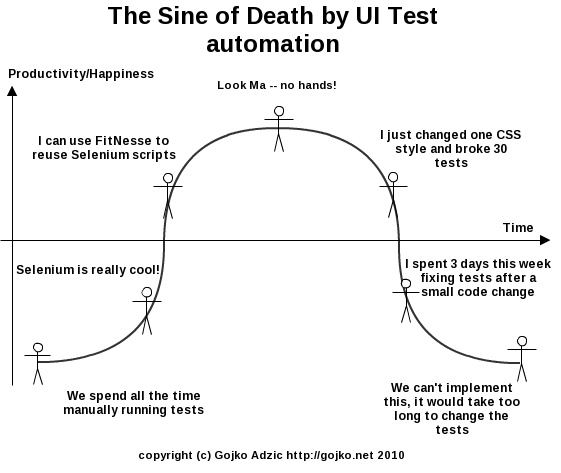
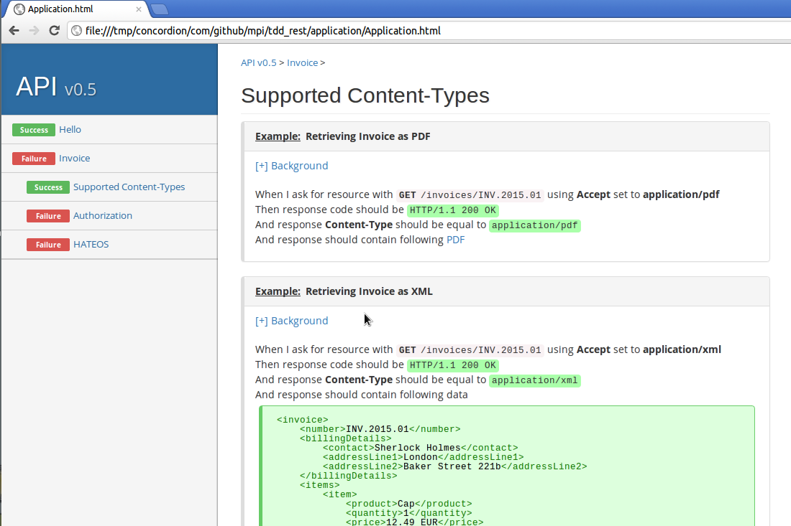
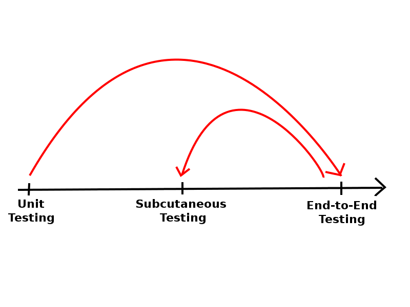
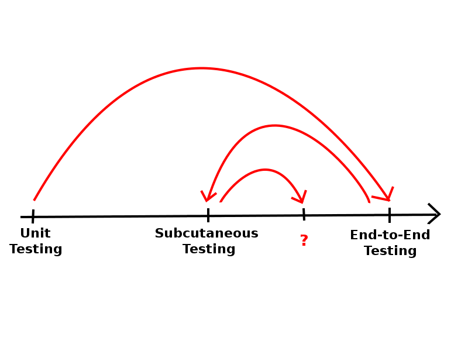
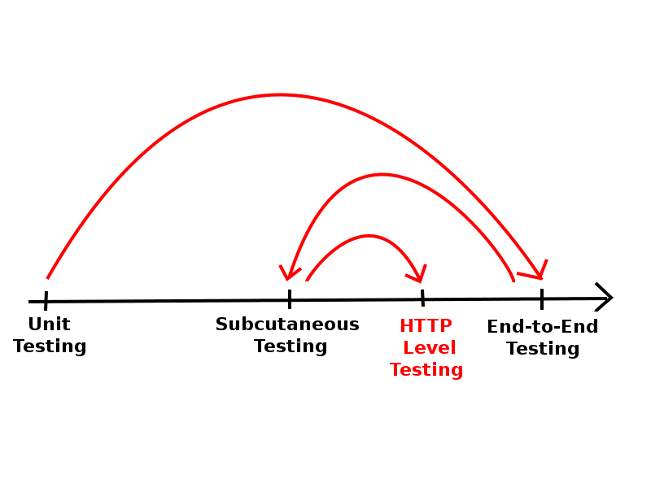
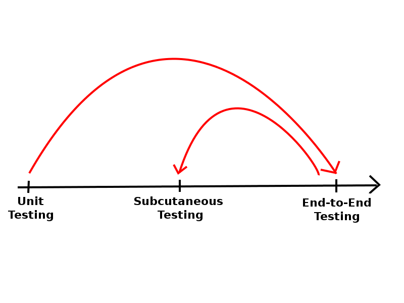
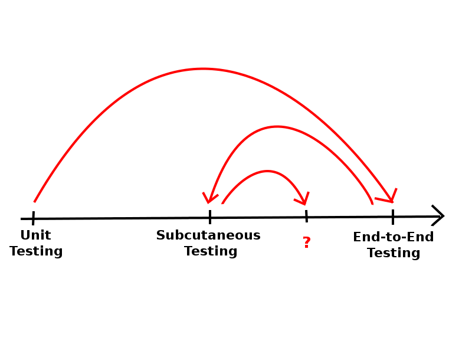
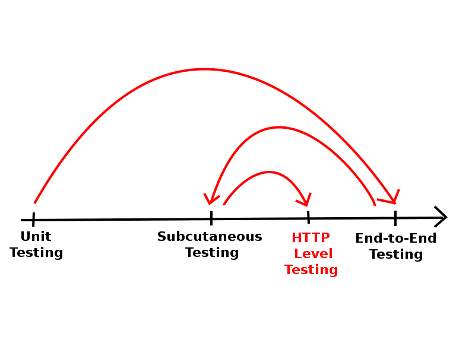

How we Test-Drive our REST API with Concordion
Hi, my name is Michał Piotrkowski.
I live in Warsaw, where I work in a company called Pragmatists.
During this time we have tried a lot of approches.
We failed many times, but eventually we have worked out our unique way of testing web applications.
TDD
Before I started practicing TDD in a timely manner, I had read a lot of books on TDD.
I thought I'm well prepared, so one day I decided to stop writing code without tests.

In real life, classes turned out to be much more complex, their responsibilites were blurred.
Objects had a lot of dependencies, and were tightly coupled to problematic frameworks.

So lets have a look at a typical code for this, so called applicaiton layer.
@RestController
public class InvoiceController {
@Autowired
private InvoiceRepository repository;
@RequestMapping(
value = "/invoices/{invoiceNumber:.+}",
method = GET)
public InvoiceJson findInvoice(@PathVariable("invoiceNumber") String invoiceNumber){
Invoice invoice = repository.load(invoiceNumber).orElseThrow(IllegalArgumentException::new);
return new InvoiceJson(invoice);
}
@JsonAutoDetect(fieldVisibility=ANY)
static class InvoiceJson {
String invoiceNumber;
BillingDetailsJson billingDetails;
List<InvoiceItemJson> lineItems = new ArrayList<>();
InvoiceJson(Invoice invoice) {
invoiceNumber = invoice.getNumber();
billingDetails = new BillingDetailsJson(invoice.getBillingDetails());
invoice.getLineItem().stream()
.forEach(lineItem -> lineItems.add(new InvoiceItemJson(lineItem)));
}
}
What we see here is a Spring MVC controller.
If you are not familiar with Spring MVC don't worry.
This is an extremly simple piece of code.
Chapter 1:
At the begining, TDD and Unit Testing was synonymus for me. I tried to unit test everything.
Unit Test (Setup)
@RunWith (MockitoJUnitRunner.class)
public class InvoiceControllerUnitTest {
@Mock
private InvoiceRepository repository;
private InvoiceController controller;
@Before
public void setUp() {
controller = new InvoiceController(repository);
}
Setup for this test might look like this:
Unit Test
@Test
public void should_return_details_of_invoice_by_invoice_number() {
// given:
Invoice invoice = new Invoice("INV.2015.01");
invoice.billFor(new BillingDetails("Sherlock Holmes", "London", "Baker Street 221b"));
invoice.addLineItem("Cap", Money.eur("12.49")).applyTax(Tax.of("23%"));
when(repository.load("INV.2015.01")).thenReturn(invoice);
// when:
InvoiceJson actualInvoice = controller.findInvoice("INV.2015.01");
// then:
InvoiceJson expectedInvoice = new InvoiceJson("INV.2015.01");
expectedInvoice.billingDetails = new BillingDetailsJson("Sherlock Holmes", "London", "Baker Street 221b");
expectedInvoice.lineItems.add(new InvoiceItemJson("Cap", 1, "12.49 EUR", "23%"));
assertReflectionEquals(expectedInvoice, actualInvoice);
}
Then we setup mock to return particular Invoice object.
We invoke a method that we wanted to test and we verify that proper DTO object has been returned.
@RestController
public class InvoiceController {
@Autowired
private InvoiceRepository repository;
@RequestMapping(
value = "/invoices/{invoiceNumber:.+}",
method = GET)
public InvoiceJson findInvoice(@PathVariable("invoiceNumber") String invoiceNumber){
Invoice invoice = repository.load(invoiceNumber).orElseThrow(IllegalArgumentException::new);
return new InvoiceJson(invoice);
}
@JsonAutoDetect(fieldVisibility=ANY)
static class InvoiceJson {
String invoiceNumber;
BillingDetailsJson billingDetails;
List<InvoiceItemJson> lineItems = new ArrayList<>();
InvoiceJson(Invoice invoice) {
invoiceNumber = invoice.getNumber();
billingDetails = new BillingDetailsJson(invoice.getBillingDetails());
invoice.getLineItem().stream()
.forEach(lineItem -> lineItems.add(new InvoiceItemJson(lineItem)));
}
}
I failed to understand here that this class is not a POJO. And it shouldn't be tested like one.
'
Another problem that we experienced while trying to Unit Test application code was an overuse of mocks.
Unit Testing
Pros
Simple & Familiar
Fast
Cons
Low confidence
Framework code stays untested
Lot of mocking
Patterns
Humble Dialog Box
Presenter First
To sum up:
But: we don't test for proper integration with framework,
Chapter 2:
As I have mentioned before, Unit Tests alone, didn't protect us from manual testing of application.
End-to-End Test (Setup)
@RunWith (SpringJUnit4ClassRunner.class)
@SpringApplicationConfiguration (classes = {Application.class})
@IntegrationTest
@WebAppConfiguration
public class InvoiceControllerEndToEndTest {
@Autowired
private InvoiceRepository invoiceRepository;
private WebDriver driver;
@Before
public void setUp() {
driver = new FirefoxDriver(new FirefoxProfile());
}
Instead of creating controller manually, we start whole application (together with servlet container).
We use Spring Boot for this.
@Test
public void should_return_details_of_invoice_by_invoice_number() throws Exception {
// given:
Invoice invoice = new Invoice("INV.2015.01");
invoice.billFor(new BillingDetails("Sherlock Holmes", "London", "Baker Street 221b"));
invoice.addLineItem("Cap", eur("12.49")).applyTax(of("23%"));
invoiceRepository.store(invoice);
// when:
driver.get(path("/client/invoices.html"));
driver.findElement(By.linkText("INV.2015.01")).click();
// then:
assertThat(isVisible(".invoice")).isTrue();
assertThat(textOf(".invoice .invoice-number")).isEqualTo("INV.2015.01");
assertThat(textOf(".invoice .billing-details .contact")).isEqualTo("Sherlock Holmes");
assertThat(textOf(".invoice .billing-details .addressLine1")).isEqualTo("London");
assertThat(textOf(".invoice .billing-details .addressLine2")).isEqualTo("Baker Street 221b");
assertThat(textOf(".invoice .item:nth-child(1) .product")).isEqualTo("Cap");
assertThat(textOf(".invoice .item:nth-child(1) .qty")).isEqualTo("1");
assertThat(textOf(".invoice .item:nth-child(1) .price")).isEqualTo("12.49 EUR");
assertThat(textOf(".invoice .item:nth-child(1) .tax")).isEqualTo("23%");
}
In a 'given' part of the test we alter appliction state by creating sample Invoice.

Instead of describing all the issues with Selenium tests that we had to face.
I will show you this great picture of Gojko Adzic.
End-to-End Tests
Pros
High confidence
Cons
Expensive to maintain (fragile)
Slow
Some frameworks can be very difficult (impossible) to test
Patterns
Page Object Pattern
End-to-End tests:
Chapter 3:
Subcutaneous Test.
“I use subcutaneous test to mean a test that operates just under the UI of an application. This is particulary valuable when doing functional testing of an application: when you want to test end-to-end behavior, but it's difficult to test through the UI itself.
Martin Fowler
So according to Martin Fowler Subcutaneous test is a test ...
Subcutaneous Testing
Pros
More confident than Unit Test
Faster and less fragile than Web Browser Automation
Cons
Problematic framework code remains untested
Code is more complicated
With Subcutaneous Test we got rid of some of the drawbacks of Unit and End-to-End tests.
Subcutaneous Test (Setup)
@RunWith (SpringJUnit4ClassRunner.class)
@SpringApplicationConfiguration (classes = {Application.class})
@IntegrationTest
@WebAppConfiguration
public class InvoiceControllerSubcutaneousTest {
@Autowired
private InvoiceRepository invoiceRepository;
@Autowired
private InvoiceController controller;
Getting back to our example.
Subcutaneous Test
@Test
public void should_return_details_of_invoice_by_invoice_number() throws Exception {
// given:
Invoice invoice = new Invoice("INV.2015.01");
invoice.billFor(new BillingDetails("Sherlock Holmes", "London", "Baker Street 221b"));
invoice.addLineItem("Cap", eur("12.49")).applyTax(of("23%"));
invoiceRepository.store(invoice);
// when:
InvoiceJson actualInvoice = controller.findInvoice("INV.2015.01");
// then:
InvoiceJson expectedInvoice = new InvoiceJson("INV.2015.01");
expectedInvoice.billingDetails = new BillingDetailsJson("Sherlock Holmes", "London", "Baker Street 221b");
expectedInvoice.lineItems.add(new InvoiceItemJson("Cap", 1, "12.49 EUR", "23%"));
assertReflectionEquals(expectedInvoice, actualInvoice);
}
And test itself would be very similiar to Unit Test.
If we drew a scale that represents a number of components involved in our tests.
Chapter 4:
In HTTP Level testing we treat application as a Black Box and interact with it trought
HTTP messages.
HTTP Level testing
Pros
More confident than Subcutaneous Testing
Faster than Web Browser Automation
All server code is tested
No need for additional abstractions to decouple problematic framework code
Cons
Client code is untested (has to be tested separetly)
Requires certain architecture (cannot be used with JSF, Vaadin, ZK, Wicket, ...)
So let's examine Pros and Cons of HTTP Level testing.
HTTP Level testing
Pros
More confident than Subcutaneous Testing
Faster than Web Browser Automation
All server code is tested
No need for additional abstractions to decouple problematic framework code
Cons
Client code is untested (has to be tested separetly)
Requires certain architecture (cannot be used with JSF, Vaadin, ZK, Wicket, ...)
There should be no HTML templating on server side.
HTTP Level Test (Setup)
@RunWith(SpringJUnit4ClassRunner.class)
@SpringApplicationConfiguration(classes = {Application.class})
@IntegrationTest
@WebAppConfiguration
public class InvoiceControllerRestTest {
@Autowired
private InvoiceRepository invoiceRepository;
Again let's have a look at code.
HTTP Level Test
@Test
public void should_return_details_of_invoice_by_invoice_number() {
// given:
Invoice invoice = new Invoice("INV.2015.01");
invoice.billFor(new BillingDetails("Sherlock Holmes", "London", "Baker Street 221b"));
invoice.addLineItem("Cap", Money.eur("12.49")).applyTax(Tax.of("23%"));
invoice.addLineItem(2, "Pipe", Money.eur("5.99")).applyTax(Tax.of("23%"));
invoiceRepository.store(invoice);
when().
get("/invoices/INV.2015.01").
then().
statusCode(200).
body(equalTo(json("{"
+ "'invoiceNumber':'INV.2015.01',"
+ "'billingDetails':{"
+ "'contact':'Sherlock Holmes',"
+ "'addressLine1':'London',"
+ "'addressLine2':'Baker Street 221b'},"
+ "'lineItems':["
+ "{'product':'Cap','quantity':1,'price':'12.49 EUR','tax':'23%'},"
+ "{'product':'Pipe','quantity':2,'price':'5.99 EUR','tax':'23%'}"
+ "]}")));
}
}
But in 'when' and 'then' parts of the test we are sending a real HTTP get request.
Unit Testing Subcutaneous Testing HTTP Level Testing End-to-End Testing
Speed Fast OK OK Slow
Confidence Low OK OK High
Maintenence cost Low OK OK High
Tests framework No No Yes Yes
Tests client No No No Yes
Ok, so let's recap.
@Test
public void should_return_details_of_invoice_by_invoice_number() {
// given:
Invoice invoice = new Invoice("INV.2015.01");
invoice.billFor(new BillingDetails("Sherlock Holmes", "London", "Baker Street 221b"));
invoice.addLineItem("Cap", Money.eur("12.49")).applyTax(Tax.of("23%"));
invoice.addLineItem(2, "Pipe", Money.eur("5.99")).applyTax(Tax.of("23%"));
invoiceRepository.store(invoice);
when().
get("/invoices/INV.2015.01").
then().
statusCode(200).
body(equalTo(json("{"
+ "'invoiceNumber':'INV.2015.01',"
+ "'billingDetails':{"
+ "'contact':'Sherlock Holmes',"
+ "'addressLine1':'London',"
+ "'addressLine2':'Baker Street 221b'},"
+ "'lineItems':["
+ "{'product':'Cap','quantity':1,'price':'12.49 EUR','tax':'23%'},"
+ "{'product':'Pipe','quantity':2,'price':'5.99 EUR','tax':'23%'}"
+ "]}")));
}
}
OK, so let's have a look once again at this test.
@Test
public void should_return_details_of_invoice_by_invoice_number() {
// given:
Invoice invoice = new Invoice("INV.2015.01");
invoice.billFor(new BillingDetails("Sherlock Holmes", "London", "Baker Street 221b"));
invoice.addLineItem("Cap", Money.eur("12.49")).applyTax(Tax.of("23%"));
invoice.addLineItem(2, "Pipe", Money.eur("5.99")).applyTax(Tax.of("23%"));
invoiceRepository.store(invoice);
when().
get("/invoices/INV.2015.01").
then().
statusCode(200).
body(equalTo(json("{"
+ "'invoiceNumber':'INV.2015.01',"
+ "'billingDetails':{"
+ "'contact':'Sherlock Holmes',"
+ "'addressLine1':'London',"
+ "'addressLine2':'Baker Street 221b'},"
+ "'lineItems':["
+ "{'product':'Cap','quantity':1,'price':'12.49 EUR','tax':'23%'},"
+ "{'product':'Pipe','quantity':2,'price':'5.99 EUR','tax':'23%'}"
+ "]}")));
}
}
Readability. Readability is (in my opinion) the most important quality of a good test.
Some time ago I was investigating Instagram API for one of my projects.
“Concordion is similar to Cucumber but focuses on readability.”
www.concordion.org
Concordion. OK, what is Concordion.
“Concordion is similar to Cucumber but focuses on readability.”
www.concordion.org
“Cucumber is a tool that executes plain-text functional descriptions as automated tests.”
www.cukes.info
That "Cucumber is a tool that executes plain-text functional descriptions as automated tests.".
Challenges
Creating HTTP requests
Asserting HTTP responses
Generating & rendering JSON
Asserting JSON
Test Set Up
Challenges we had to face were:
Creating HTTP requests and asserting HTTP responses
Test case written in HTML
Test Fixture (Concordion)
Endpoint implementation
Examples of tests in HTML with Concordion
"Drawing" invoice in HTML
Pretty printing & Syntax highliting (Codemirror)

Test as a SVG image
Living Documentation
Executable Specification
Self Validated
Always up-to-date
As you can see, primarily we were looking simply for a good tests,
Thank you!
If I had to pick one thing, that I would like you to rememeber from this presentation.


 






 Concordion
Concordion